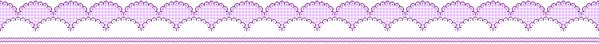

Sanrio's Mariland!
Sanrio is the Japanese company that creates cute characters and sells products themed around them. Hello Kitty is Sanrio’s most popular character—you’ve probably heard of her! Sanrio has so many characters, and I think they’re all precious! Some of them (including everyone mentioned on this page) live in the Mariland forest, in London, England. One of my favourite characters is Kuromi, which is why I chose her to decorate my left navigation bar!
I love Kuromi because she’s a very interesting character: she’s “punk” and mischievous, but not afraid to be girly; she’s stubborn for self-improvement because she wants to live her best life; and she holds a “friendly” rivalry with My Melody. Kuromi and My Melody are both rabbits who wear cute little hoods which display their opposing personalities. Kuromi’s relationship with My Melody was explored in the animated show Onegai My Melody! This show also featured the pink sheep named My Sweet Piano! Aren't they absolutely adorable?!

The Cutest Friends
You can click each of the characters in this image to go to their respective Sanrio webpage. I chose the Japanese pages because they have a short description of each character, so if you don’t know Japanese, you can right-click the page and select the “Translate to English” option! On their pages, Kuromi and My Melo both have links to their “special content” pages—there’s even more to explore there! Unfortunately, Piano doesn’t currently have an extra “special content” page because she’s a minor character, but I love her regardless!
